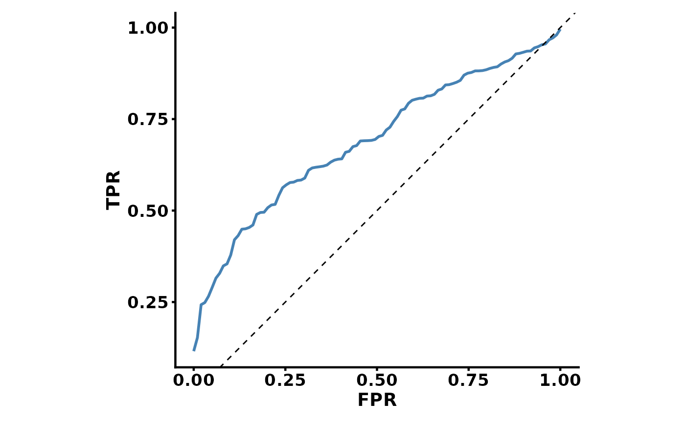
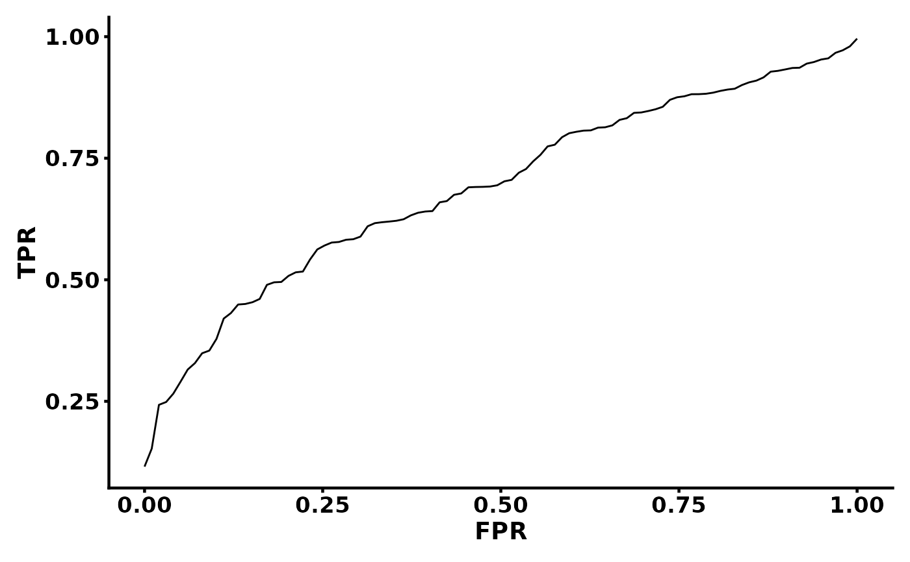

A clean ggplot2 theme designed for ROC curves, calibration plots, and similar
diagnostic plots. Based on theme_classic with bold axis text, centred
titles, and a compact legend positioned inside the panel.
Arguments
- base_size
Numeric. Base font size (default 11).
- axis_text_size
Numeric. Axis tick-label size (default 13).
- axis_title_size
Numeric. Axis title size (default 14).
- title_size
Numeric. Plot title size (default 16).
- subtitle_size
Numeric. Subtitle size (default 9).
- strip_size
Numeric. Facet strip text size (default 12).
- legend_text_size
Numeric. Legend text size (default 9).
- legend_title_size
Numeric. Legend title size (default 8).
- legend.position
Legend position. Default
c(0.8, 0.3)(inside panel). Use"right","bottom", etc. for outside placement.- axis_linewidth
Numeric. Axis line and tick width (default 0.8).
- plot_margin
Margin around the plot in pt. Default
margin(10, 10, 10, 10).
See also
Other ggplot2 themes:
leg1(),
leg2(),
theme_alluvia(),
theme_blank(),
theme_heat(),
theme_km,
theme_legend(),
theme_legend1(),
theme_my(),
theme_rcs,
theme_sc(),
theme_scatter
Examples
library(ggplot2)
# Basic ROC-style plot
set.seed(1)
df <- data.frame(FPR = seq(0, 1, length.out = 100),
TPR = sort(runif(100))^0.5)
ggplot(df, aes(FPR, TPR)) +
geom_line(color = "steelblue", linewidth = 1) +
geom_abline(slope = 1, intercept = 0, linetype = "dashed") +
coord_equal() +
theme_ROC()

# Customise legend position
ggplot(df, aes(FPR, TPR)) +
geom_line() +
theme_ROC(legend.position = "right")
